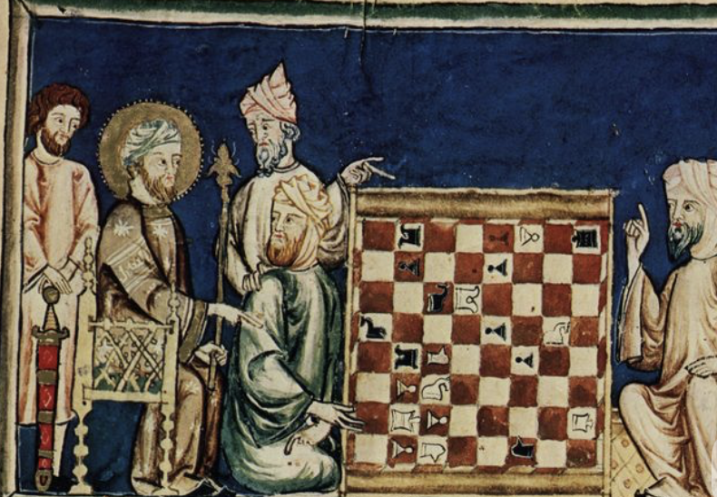

El origen del ajedrez
El ajedrez es uno de los juegos más antiguos del mundo, con más de 1500 años de historia.
Su antecedente más reconocido es el chaturanga, surgido en la India alrededor del siglo VI. Este juego representaba las cuatro divisiones del ejército: infantería, caballería, elefantes y carros de guerra.
Desde la India, el juego se expandió hacia Persia, donde recibió el nombre de shatranj. Tras la expansión islámica, llegó a Europa durante la Edad Media, donde evolucionó hasta adoptar las reglas modernas.

Del ajedrez clásico al ajedrez moderno
Con el paso de los siglos, el ajedrez se convirtió en un símbolo de estrategia, intelecto y competencia internacional.
En 1886 se celebró el primer Campeonato Mundial oficial, marcando el inicio de una era competitiva formal. Durante el siglo XX, el ajedrez adquirió relevancia política y cultural, especialmente durante la Guerra Fría.
En el siglo XXI, la tecnología transformó el juego: motores de análisis, inteligencia artificial y plataformas online permiten competir globalmente en tiempo real.
Hoy en día, el ajedrez combina tradición milenaria con innovación tecnológica, manteniéndose como uno de los juegos más influyentes de la historia.